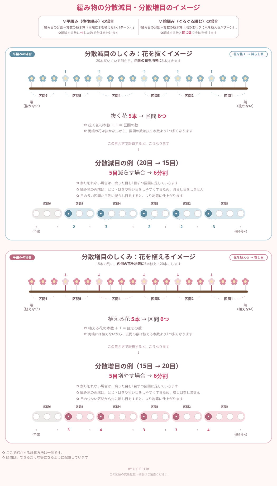

分散減目・分散増目とは？
分散減目・・・目数を均等に減らす技法
分散増目・・・目数を均等に増やす技法
セーターの袖や身頃の切り替え部分など、均等に目数を減らしたい（増やしたい）ときに使います。
算数の植木算×お花の図解で解説
分散減目・・・目数を均等に減らす技法
分散増目・・・目数を均等に増やす技法
セーターの袖や身頃の切り替え部分など、均等に目数を減らしたい（増やしたい）ときに使います。
編み物で分散減目・分散増目を平編みで行う場合、一般的に両端の目を減らしたり、増やしたりしません。あとで「とじ・はぎ」や「拾い目」をしやすく、綺麗に仕上げるためです。実はこの考え方、算数の「植木算」と同じ構造をしています。その仕組みを、お花を抜く・植えるイメージで図解にしました。

分散減目・分散増目を平編みで行う場合、両端の目は減らし目や増し目をせず、そのまま残します。あとで「とじ・はぎ」や「拾い目」をしやすく、綺麗に仕上げるためです。
このルール、実は算数の「植木算」と同じ構造をしています。道の両端には木を植えず、内側だけに木を植えると、区間の数は木の本数より1つ多くなる、というものです。編み物の分散計算でも、内側の目を減らしたり、増やしたりしたいので、内側の木＝内側の目を減らす（増やす）場所、両端の木＝そのまま残す端の目とする、という対応関係になり、増減したい目数に「＋1」をした数で全体を分けてから、減らし目や増し目します。
元々の目数から、内側の目だけを均等に減らしていくのが分散減目です。両端の目は、とじ・はぎや拾い目をしやすくするために、減らさずに残します。
元々の目数に、内側だけ均等に新しい目を増やしていくのが分散増目です。こちらも両端には増やさず、そのまま残します。
手順が分かれば、手計算でも求められます。ここでは20目→15目（分散減目）、15目→20目（分散増目）を例に、実際の手順をご紹介します。
具体例（20目 → 15目に減らす場合）
| 区間の種類 | 目数 | 区間の数 | やること |
|---|---|---|---|
| 大きい区間 | 4目 | 2区間 | 2目一度で1目減らす × 2回 |
| 小さい区間 | 3目 | 3区間 | 2目一度で1目減らす × 3回 |
| 小さい区間 | 3目 | 1区間 | 減らさずそのまま編む |
これで合計6区間、20目 → 15目になります。
考え方は同じですが、「小さい区間から先に増やす」という点だけ、減目と順番が逆になります。
具体例（15目 → 20目に増やす場合）
| 区間の種類 | 目数 | 区間の数 | やること |
|---|---|---|---|
| 小さい区間 | 2目 | 3区間 | 1目増やす × 3回 |
| 大きい区間 | 3目 | 2区間 | 1目増やす × 2回 |
| 大きい区間 | 3目 | 1区間 | 増やさずそのまま編む |
これで合計6区間、15目 → 20目になります。
これらのちょっと面倒な分散計算をしてくれる便利なアプリがあります。ぜひ使って見てください。
編み物分散増減計算アプリで計算するこの「＋1」ルールは、往復して編む「平編み」の場合の考え方です。ぐるぐると輪にして編む「輪編み」では、両端という概念自体がなくなるため、増減する数と同じ数で全体を分けます（池のまわりに木を植えるパターン）。